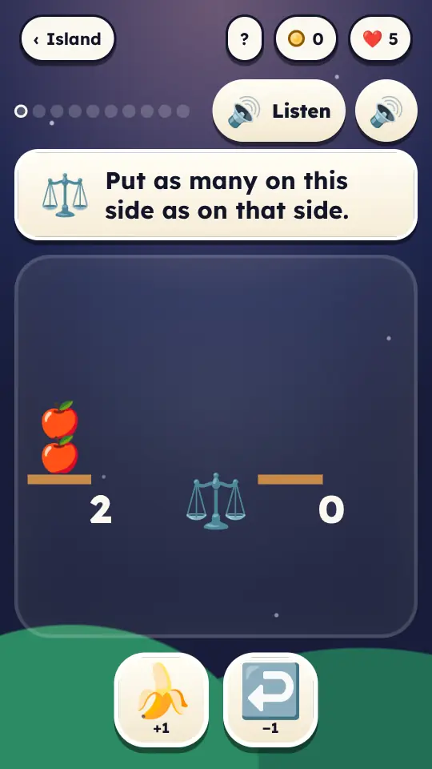

All labs › Maths › Fruit Scales
Maths lab · Gauri's Garden
Fruit Scales
फलों का तराज़ू · गिनकर बराबर करो
Add fruit to one side of the scales until both sides show the same number.
- Maths
- Explorer · ages 4–7
- 10 levels
- English · हिंदी
- Free, no sign-up

How it works
Count to match
- Look at the number on the left side.
- Tap the fruit button to add one fruit to the right side.
- Stop when both numbers are the same.
Explorer labs read instructions aloud, and a wrong try never costs anything.
Why it works
The big idea
Equal means "the same on both sides", like two friends with the same number of sweets.
What children learn
Skills in this lab
- Counting on
- Matching two numbers
- The meaning of "equal"
For parents and teachers
This lab is in the Explorer band (ages 4–7). Each player picks a band, and sees only the labs made for it.
Curio Island is free in the browser with no sign-up. Progress is saved on this device only. Ads are child-safe and non-personalised, and never appear inside a lab.
Part of Gauri's Garden on the island. 10 levels to finish.